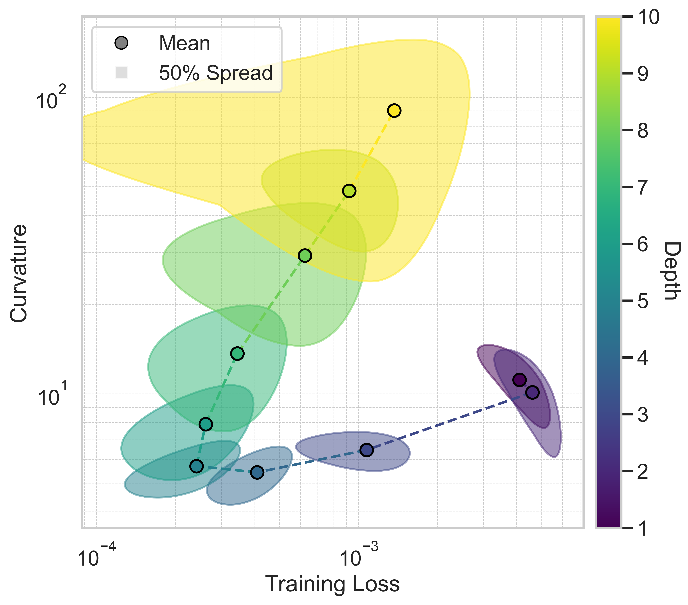

Loss-Landscape Geometry of Neural Networks

This project investigates how neural network depth affects generalization by analyzing the geometry of the training-loss landscape. Fully connected networks of varying depths were trained on MNIST and analyzed using curvature and loss metrics at their converged minima. Two summary statistics—a parameter cluster radius and a depth-dependent trade-off weight—revealed an optimal window near depth 4. Adding a global curvature penalty reduced validation error by over 15%, showing that Hessian-based regularization can improve generalization in a principled, architecture-aware way.